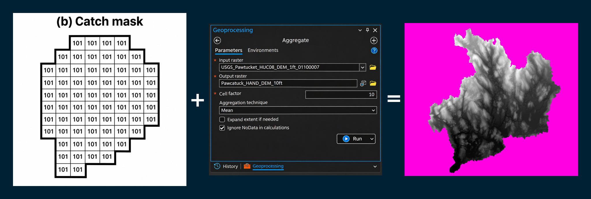
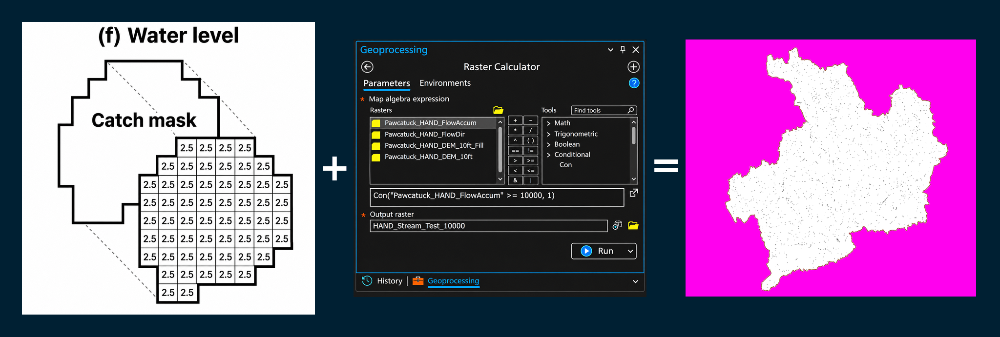
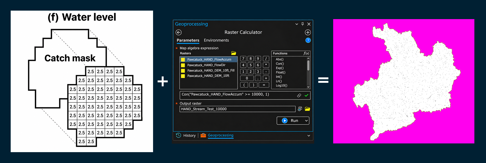
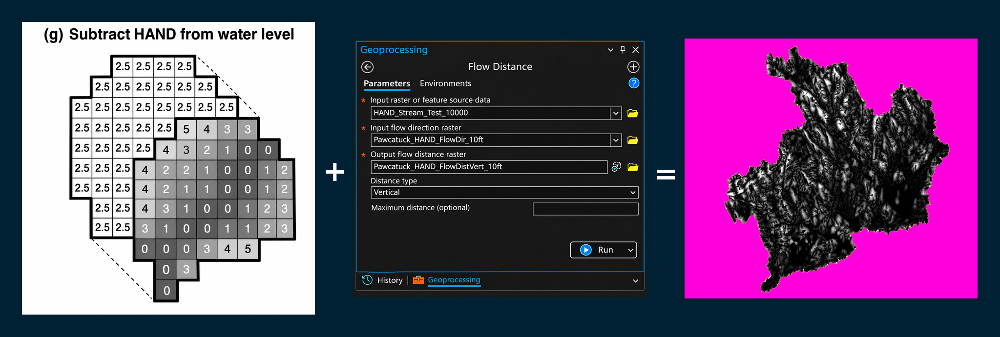
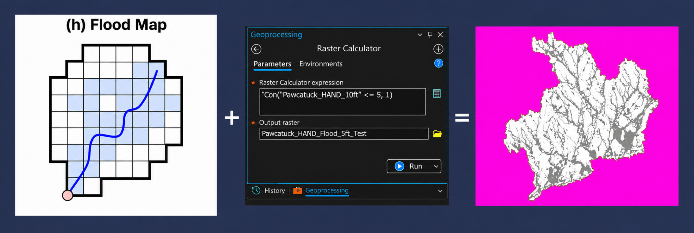
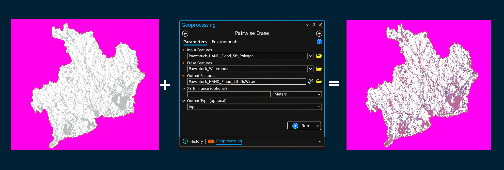
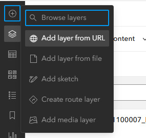

The eight stages below follow the supplied HAND conceptual methodology. Expand a stage to view its illustration, stated inputs and output, and review checklist. Illustrated ArcGIS Pro panels depict selected supporting operations and should not be mistaken for proof that every proposed output was generated.
(a) Catchment0/3

Process: Delineates the land area draining toward a specified stream reach and outlet using the flow-direction raster and drainage network.
- Input
- Pawcatuck_HAND_FlowDir; HAND_Stream_Test_10000
- Output
Pawcatuck_HAND_Catchment- Status
- Proposed output — not verified as generated
Review and completion checklist
(b) Catch mask0/3

Process: Converts the delineated catchment into a raster mask, assigning each cell the identifier of its associated drainage reach (101 in this example).
- Input
- Pawcatuck_HAND_Catchment (proposed)
- Output
Pawcatuck_HAND_Catch_Mask- Status
- Proposed output — not verified as generated
Review and completion checklist
(c) HAND0/3

Process: Calculates each terrain cell’s vertical elevation above its downstream drainage channel, producing a HAND raster that identifies low-lying terrain throughout the Pawcatuck watershed.
- Input
- Fill_Pawcatu1; Pawcatuck_HAND_FlowDir; HAND_Stream_Test_10000
- Output
Pawcatuck_HAND_10ft- Status
- Named output — generation status not independently verified
Review and completion checklist
(d) Stage0/3

Process: Converts river discharge into an estimated water level for each stream reach using a synthetic rating curve, providing the stage needed to calculate potential flood inundation.
- Input
- Streamflow (CFS) and synthetic rating curve for the selected stream reach (not yet generated)
- Output
Pawcatuck_HAND_Reach_Stage- Status
- Proposed output — not verified as generated
Review and completion checklist
(e) Reclass table0/3

Process: Creates a lookup table associating each stream reach with its estimated water level, allowing the corresponding stage to be assigned to its drainage catchment.
- Input
- Pawcatuck_HAND_Reach_Stage (proposed)
- Output
Pawcatuck_HAND_Stage_Reclass_Table- Status
- Proposed output — not verified as generated
Review and completion checklist
(f) Water level0/3


Process: Assigns the estimated water level for each stream reach to every raster cell within its associated drainage catchment, creating a water-level surface for flood-depth calculations.
- Input
- Pawcatuck_HAND_Catch_Mask (proposed); Pawcatuck_HAND_Stage_Reclass_Table (proposed)
- Output
Pawcatuck_HAND_Water_Level- Status
- Proposed output — not verified as generated
Review and completion checklist
(g) Subtract HAND from water level0/3

Process: Subtracts each terrain cell’s HAND elevation from its assigned water level to estimate floodwater depth, with positive values identifying potentially inundated areas.
- Input
- Pawcatuck_HAND_10ft; Pawcatuck_HAND_Water_Level (proposed)
- Output
Pawcatuck_HAND_Flood_Depth- Status
- Proposed output — not verified as generated
Review and completion checklist
(h) Flood map0/3

Process: Identifies and maps inundated raster cells where estimated water levels exceed the HAND elevation, producing a flood extent that follows the terrain and drainage network.
- Input
- Pawcatuck_HAND_Flood_Depth (proposed)
- Output
Pawcatuck_HAND_Flood_Map- Status
- Proposed output — not verified as generated
Review and completion checklist
Scope: This page documents the eight-stage HAND flood-mapping methodology. Outputs explicitly labeled proposed remain proposed until production and QA are confirmed. In particular, the reach-specific synthetic rating curve is described as not yet generated. The numbered ArcGIS Pro illustrations include DEM preparation, flow modeling, Raster Calculator, and Pairwise Erase examples; they do not by themselves demonstrate execution of every conceptual stage.
Reference — additional flood-extent postprocessing

When appropriate, compare and clean a derived flood extent using documented reference layers. The supplied screenshot depicts Pairwise Erase; it does not establish that the full stage-based flood model has been completed.
Next — Add NOAA modeled inundation extent to ArcGIS Online
With your existing map open in Map Viewer:

- Click Add (+) and select Add layer from URL.
- Paste the NOAA ArcGIS Server service URL:
https://maps.water.noaa.gov/server/rest/services/nwm/ana_inundation_extent/MapServer - If prompted, choose ArcGIS Server web service, and add it to the map.
- Use Inundation Extent (Experimental) (sublayer 0) for the modeled flood footprint, and save the web map.
Interpretation of NOAA layer: This represents experimental, modeled inundation rather than directly observed flooding. An area without mapped inundation does not prove that flooding is absent. NOAA’s service is a separate model-based reference, not a replacement for the local HAND workflow or a correction to the terrain model.